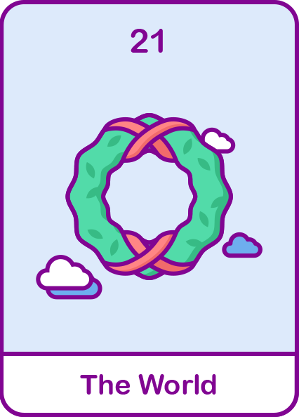

세계
모든 사람들의 안녕과 평화를 바라는 매혹적인 사람입니다.
주변에 사람이 많고 항상 바쁘고 한 곳에 정착할 시간이 많이 필요해요.

#매혹적
#안정감
#여행
현대해상
내 성격 타로카드 해석은?
정방향 해석
- 리액션이 풍부하고 말을 잘하며 고민 들어주는 걸 잘해요.
- 친구, 가족, 지인들을 다 챙기며 그 사람들의 안녕과 평화를 바라는 사람입니다.
- 남들에게 싫은 소리하기보다 다 맞춰주고 감정이 풍부해 힘들어하는 사람 그냥 못 지나쳐요.
- 완벽주의자 성향이 있고 맞춤법에 신경 많이 쓰며 타고난 분위기 메이커로 늘 활기차요.
역방향 해석
- 확실히 친해지기 전이나 내 마음이 완전하게 허락하지 전까지 완벽한 나 자신을 보여주지 않아요.
- 작심삼일이라 일을 벌려놓고 끝이 흐지부지 되는 경우가 많아요.
- 내 사람이라고 생각하면 무한한 애정을 주다보니 집착하는 경향이 있어요.
- 늘 계획이 많고 주변에 사람도 많아서 항상 바쁘고 한 곳에 오래 있지 못해요.
재미로 보는
내 타로카드의 재물운은?
내 카드는 늘 부유하고 풍족한 금전운을 가지고 있어요.
투자를 했다면 좋은 소식이 올 것이고 예상치 못한 보너스 등 금전적인 좋은 소식이 들려올 것 입니다!
오랜기간 저축했다면 재정적으로 안정적인 흐름을 탈 것입니다.
하지만 너무 안심하는 것은 금물! 늘 눈 크게 뜨고 잘 확인 또 확인 해야합니다.
금전적인 거래시 신중함이 필요하고 친구와의 돈 거래를 주의해주세요! 지름길을 위한 위험한 투자도 조심해주세요!
투자를 했다면 좋은 소식이 올 것이고 예상치 못한 보너스 등 금전적인 좋은 소식이 들려올 것 입니다!
오랜기간 저축했다면 재정적으로 안정적인 흐름을 탈 것입니다.
하지만 너무 안심하는 것은 금물! 늘 눈 크게 뜨고 잘 확인 또 확인 해야합니다.
금전적인 거래시 신중함이 필요하고 친구와의 돈 거래를 주의해주세요! 지름길을 위한 위험한 투자도 조심해주세요!
보험 컨디션도 체크해보기! 가입한 보험을 확인하고
부족한 부분을 채워 보세요 현대해상